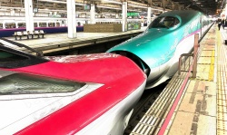

「通勤手当等の見直しについて」
会社提案「通勤手当等の見直しについて」に関する提案内容と交渉経過です。

- 提案内容
- 提案のポイント
- 「通勤手当等の見直しについて」に関する申し入れ（解明）
- 「通勤手当等の見直しについて」に関する申し入れ（解明）団体交渉
- 「『通勤手当等の見直しについて』に関する(基本要求)申し入れ
- 「『通勤手当等の見直しについて』に関する(基本要求)申し入れ団体交渉NEW
「通勤手当等の見直しについて」提案を受ける
中央本部は4月25日、経営側より「通勤手当等の見直しについて」提案を受けました。
提案の趣旨及び提案内容は以下の通りです。
「目的」（要旨）
「変革2027」の実現に向けた社員の様々な挑戦をサポートするとともに、社会環境の変化やライフスタイルの多様化に柔軟に対応し、社員のライフの充実とワークにおける生産性向上等を目的とする。
提案内容
Ⅰ、通勤手当の見直し
新幹線又は在来線特急列車（以下「新幹線等」）を利用する通勤に対して、通勤手当を支給するとともに、認定の取扱いを見直す。
※モニター制度は、創設から長期間が経過し、この間の社会制度の変更等により制度の維持が困難となっていることなどから、廃止する（現行モニター利用者には経過措置を設ける）。
(1) 新幹線等を利用する通勤に対する通勤手当
- 支給条件および範囲
新幹線等で通勤する場合であって、次のいずれかに該当する場合に通勤手当を支給する。
- 在来線普通列車での通勤時間が1時間30分以上で、かつ、自社線の新幹線利用により45分以上短縮できる。※新幹線の乗車距離は400Km以内に限る。
- 会社が認めた在来線特急列車を利用する場合。
- 会社が特に必要と認めた場合。
- 支給額および支給限度額
1. の適用を受け新幹線を利用して通勤する社員に対する通勤手当の支給は、支給限度額を設けず実費額とする。
(2) 定期乗車券の取扱い
通勤手当の認定は、社員の勤務状況にかかわらず、当該交通機関の発行する最長期間の定期乗車券（新幹線定期券を含む）を基本とし、認定を行う。なお、定期乗車券の認定については、継続購入時の確認を省略し、毎年７月及び必要と認めた場合に行う。
Ⅱ、別居手当の見直し
別居手当のうち、「配偶者の居住地から新勤務箇所までの距離又は所要時間が、100km又は2時間以上あり、かつ、配偶者の居住地から社員の居住地までの距離又は所要時間が、50km以上又は1時間以上ある場合」の支給額は以下に定めるとおりとする。
月額40,000円
Ⅲ、都市手当の見直し
都市手当の級地異動に伴う特例について、保障期間が36箇月であり、かつ、異動前都市手当支給期間が36箇月以上ある場合は、保障期間終了後、異動前の支給割合による都市手当を支給した月数から36箇月を減じた月数分（ただし、12箇月を限度とする）、保障されていた級地区分の直近会の級地区分を保障する。
Ⅳ、実施期日
令和元年10月1日
以 上
提案のポイント
新幹線等の通勤手当について
◆新幹線等の通勤に対して通勤手当を新たに支給し、モニター制度を廃止
【現行（モニター）】
- 0km〜100km 指定区間のみ
- 100km〜400km 全ての区間
【改正（通勤手当】
- 0km〜100km 通勤1時間30分以上・短縮45分以上は対象
- 100km〜300km 全ての区間
- 400km〜 経過措置（現行モニター利用者のみ）
- ※新幹線定期券（FREX定期券）を購入
【現行モニター指定区間に加えて、新たに以下の区間が対象】
（例）
- 大宮〜高崎/宇都宮
- 東京・上野〜小山
- 長岡〜新潟
- 福島〜仙台
- 水沢江刺〜盛岡
- 仙台〜古川
- 長野〜飯山
- 東海道新幹線
- 東京・品川〜小田原・熱海
- 新横浜〜熱海
【転勤発令に伴い新幹線乗車距離300km超の通勤を行う場合には、税負担等を考慮して通勤援助金を支給。】
支給額
- 300km〜350km 月額20,000円
- 350km〜400km 月額30,000円
◆回数乗車券で認めていた通勤は、今後、定期乗車券を基本とする。
定期乗車券は、最長期間のものを購入。
別居手当の増額
◆100km以上又は2時間以上の場合の支給額を増額
30,000円⇒40,000円
都市手当の級地保障の見直し
◆都市手当の級地異動に伴う特例の保障期間の上限（36箇月）を超えた場合、12箇月を上限に１ランク下の級地保障を行う。
解明申し入れを行う
本部は、2019年6月4日申第27号「『通勤手当等の見直しについて』に関する申し入れ（解明）」を経営側に提出しました。
経営側は、今提案については従来の制度と比較して、より柔軟で社員のニーズに合った改善が図られるとされています。しかし、職場の現実は見直しの根拠や適用の範囲等に至るまで様々な疑問の声が寄せられています。
また、通勤手当は賃金の一部であることから総額人件費に与える影響も当然出てくると考えており、公平性、納得性の観点からも、すべてのJR労働者の理解が不可欠です。
解明要求の団体交渉を行う
本部は2019年6月14日、申第27号「『通勤手当等の見直しについて』に関する申し入れ（解明）」の団体交渉を開催しました。
団体交渉では「モニター制度を廃止とする根拠」「新幹線等を利用する通勤に対する通勤手当」「自動車等での通勤」「見直しに伴う社員の税負担」など、解明要求（18項目）を一つひとつ議論し、提案内容をより鮮明にしてきました。
また、労働組合の立場から賃金や手当に関しては、他の施策提案と比べて社員説明が不十分であることを指摘したほか、社員の意見やニーズを公平に聴く機会設定などを提言してきました。
新幹線通勤で「条件なし」区間と、「条件付き」区間が明らかに
「無条件で可能な区間」
- 東北新幹線・仙台~古川(43.2km)
- 北陸新幹線・長野~飯山(29.9km)
- 東海道新幹線・東京・品川~小田原・熱海
- 東海道新幹線・新横浜~熱海
「条件付きで、可能となる区間」
- 大宮〜高崎(74.7km)
- 大宮〜宇都宮(79.2km)
- 東京・上野〜小山(80.6km)
- 長岡~新潟(63.3km)
- 福島~仙台(79km)
- 水沢江刺~盛岡(65.2km)等
- 「条件付き」とは、
- あくまで「乗り換え時間を含め、在来線普通列車での通勤時間が1時間30分以上であり、かつ、自社線の新幹線の利用により45分以上短縮ができる場合」の条件を満たした場合のみ、新幹線を利用した通勤が可能となります。
- また「等」と記載しているのは「上記区間以外にも対象となり得る区間が存在するが、対象区間をすべて掲載できないため」としており、支給条件を満たせば上記区間以外でも新幹線通勤が可能であるとの考えを示しています。
在来線特急列車による通勤は？
- 在来線特急列車による通勤に関しては、
- 「現行モニター制度」で認めている区間は継続するものの「今回新たに設定する区間はない」としています。
- なお「現行モニター制度」で認めている区間の設定根拠として「100km超である」「在来線普通列車との時間差がある」「お客さまの列車ご利用状況を勘案している」などとしています。
- ただし一方で「乱用はしないが、新たな区間を認める余地はある」との考えを示しています。
「申し入れ内容」と「会社書面回答」は、以下の通りです。
申し入れ内容
- １．モニター制度について「創設から長期間が経過し、この間の社会制度の変更等により制度の維持が困難になっている」とした根拠を明らかにすること。
- 【回答】モニター制度は、創設から長期間が経過し、この間の社会制度の変更等により制度の維持が困難になっていることなどから、廃止を判断したものである。
- ２．「在来線普通列車での通勤時間が1時間30分以上であり、かつ、自社線の新幹線の利用により45分以上短縮できる場合」とした根拠を明らかにすること。
- 【回答】通勤時間の長さやその短縮効果、お客さまのご利用状況等を勘案して設定したものである。
- ３．新幹線等の乗車距離を400km以内とした根拠を明らかにすること。
- 【回答】お客さま向けに設定しているＦＲＥＸ定期券の設定範囲、現行モニター制度の利用状況に鑑み、400㎞以内としたものである。
- ４．通勤手当の支給条件及び範囲のうち「会社が認めた在来線特別急行列車を利用する場合」が適用される具体的要件を明らかにすること。
- 【回答】現行のモニター制度で認めている区間については、通勤手当の支給対象とする考えである。
- ５．通勤手当の支給条件及び範囲のうち「会社が特に必要と認めた場合」が適用される具体的要件を明らかにすること。
- 【回答】仙台～古川、長野～飯山、東海道新幹線（東京・品川～小田原・熱海、新横浜～熱海）について、特に認めた区間として通勤手当の支給対象とする考えである。
- ６．現行モニター区間に加え、新たな区間を対象としたが、その根拠を明らかにすること。
- 【回答】「変革2027」の実現に向けた社員の様々な挑戦をサポートするとともに、社会環境の変化やライフスタイルの多様化に柔軟に対応し、社員のライフの充実とワークにおける生産性向上等を目的として見直しを行うものである。
- ７．現行モニター区間に加え、新たに対象区間とした区間を全て明らかにすること。
- 【回答】新幹線等で通勤する場合の通勤手当については、在来線普通列車での通勤時間が1時間30分以上であり、かつ、自社線の新幹線の利用により45分以上短縮できる場合等、条件を満たしていれば認定することとなる。
- ８．仙台～古川、長野～飯山、東海道新幹線（東京・品川～小田原・熱海、新横浜～熱海）等を特に認めた区間とした根拠を明らかにすること。
- 【回答】新幹線通勤のニーズ等を勘案し、支給対象とすることとしたものである。
- ９．通勤援助金について300km超え350kmまでを月額20,000円、350km超え400kmまでを月額30,000円とした根拠を明らかにすること。
- 【回答】通勤手当の支給に伴い発生する社会保険料及び税については本人負担が原則であるが、これまでのモニター制度での負担状況や、遠距離通勤の実態等を勘案し、援助金として一定の措置を行うこととしたものである。
- 10．異動に伴うFREX定期券の区間変更の対応方について明らかにすること。
- 【回答】通勤手当に変更が生じた場合は、発令又は事実発生の日以降の通用期間に相当する定期乗車券の代価のうち、すでに支給した通勤手当の未経過部分相当額を返納することとなる。
- 11．新幹線定期券(FREX定期券)を使用して全車指定席列車を利用する場合の取扱いを明らかにすること。
- 【回答】FREX定期券は自由席のみの利用となり全席指定席の列車については「はやぶさ号」「はやて号」の仙台～新青森間の普通車を立席で利用することができる。
- 12．新幹線等停車駅までの間が内方5km以内又は1駅の場合に限り最寄駅として認め、逆方向に戻って乗車できる根拠を明らかにすること。
- 【回答】現行のモニター制度と同様、新幹線等の乗車駅に対して、逆方向に戻って乗車することはできないが、最寄駅から新幹線等停車駅までの間が内方5km以内又は1駅の場合に限り、最寄駅として認める考えである。
- 13．在来線特別急行列車を利用した場合、特急券代の精算方法を明らかにすること。
- 【回答】乗車券分については職務乗車証を利用し、特急券を購入することとなる。特急券の購入にかかる通勤手当は、実際に使用した回数に基づき翌月の賃金支給日に支給することとなる。
- 14．自動車等で通勤する者に対する通勤手当の支給額区分を(1)から(9)に定めている根拠を明らかにすること。
- 15．自動車等で通勤する者に対する通勤手当の上限を「一利用区間の距離が40km以上」としている根拠を明らかにすること。
- 16．ＪＲ線から他社線等への乗換における徒歩時分の計算について考え方を明らかにすること。
- 【回答14〜16】通勤手当については、通勤のため、交通機関又は有料道路を使用することを常例とする者及び、自動車等を使用することを常例とする者に対して支給する手当であり、社員の負担等を考慮し支給額及び支給限度額を決定しているところである。
- 17．通勤手当の見直しによる所得増加に伴う自治体等から受ける支援制度（保育料等の住民サービス）に変化が生じることに対する考え方を明らかにすること。
- 【回答】通勤手当の支給に伴い発生する社会保険料及び税については本人負担が原則であるが、これまでのモニター制度での負担状況や、遠距離通勤の実態等を勘案し、援助金として一定の措置を行うこととしたものである。
- 18．今見直しによる総額人件費の増額分について明らかにすること。
- 【回答】今回の改正は人件費の削減を目的としたものではなく、改正しない場合と比較して人件費総額は増加することとなる。
以 上
「通勤手当の見直しについて」基本要求を申し入れる
本部は2019年6月21日、経営側に申第29号「『通勤手当等の見直しについて』に関する(基本)申し入れを提出しました。
組合側の主な主張は、「今、通勤手当等の見直しに該当しない社員にもスポットをあてるべきだ！」とし以下の点に重点を置いて申し入れました。
◆首都圏の通勤事情と地方の通勤事情は違う。一律の制度では不公平だ。
- 地方交通線に居住地があり、最寄りの新幹線駅まで車通勤を認め通勤手当を支給すべき。
- 通勤時間が1時間29分の社員でも新幹線通勤を認めるために「概ね」の幅を持つべき。
- 現行の在来線特急列車の使用が認められているモニター制度（指定区間）に限らず、営業キロ50㎞以上は認めるべき。
- 自動車等の通勤手当の支給額をガソリン代の値上げ等も考慮して見直すべき。
- 新幹線通勤における内方乗車は在来線2駅又は10㎞とするべき。
具体的申し入れ項目については「申第29号申し入れ項目と会社回答」を御覧ください
申第29号「『通勤手当等の見直しについて』に関する(基本)申し入れ」団体交渉実施
本部は2019年7月12日、申第29号通勤手当見直しの基本要求について、団体交渉を実施しました。
組合側の主張を一切受け入れず
《労使共通認識》
- 安全・安定輸送を担う社員の通勤による疲労軽減は、通勤時間の短縮が課題である。
- 1時間30分以上の通勤は長いと認識している。
《経営側の回答》
【回答】今回の提案内容と自動車等や在来線特急に関わる内容は現行制度で妥当。問題はない。
経営側の「現行制度で妥当」とする根拠は明確なものはなく、1時間30分の通勤時間は長いと認識をしながらも、今回の見直しに該当しない社員の通勤疲労を解消することができませんでした。
《確認事項》
通勤時間とは、自宅～勤務開始時刻
◆イメージ図
◆勤務単位での会社対応
勤務開始時間又は勤務終了時間（超過勤務含む）に在来線普通列車がない場合等で新幹線利用や自動車等の通勤を勤務単位で認め、通勤手当ではなく交通費など費用として箇所長承認を行い支給する。
「申し入れ項目」及び「会社書面回答」は以下の通りです。
申第29号申し入れ項目と会社回答
「支給条件と支給範囲及び支給額について」
- 1．会社提案である「在来線普通列車での通勤時間が1時間30分以上であり、かつ自社線の新幹線利用により45分以上短縮できる場合」を「在来線普通列車での通勤時間が概ね1時間以上であり、かつ自社線の新幹線利用により概ね30分以上短縮できる場合」とすること。
- 【回答】通勤手当の見直しにおいて、通勤時間の長さやその短縮効果、お客さまのご利用状況等を勘案し、支給条件及び範囲の要件に該当した場合に新幹線を利用する通勤に対して通勤手当を支給することとしたものである。
- 2．在来線最寄駅（居住地又は勤務箇所）が、日中時間帯において普通列車の列車間合いが1時間以上ある線区は時間帯に限らず新幹線及び在来線特別急行列車による通勤を可能とすること。
- 【回答】新幹線等で通勤する場合の通勤手当については、在来線普通列車での通勤時間が1時間30分以上であり、かつ、自社線の新幹線利用により45分以上短縮できる場合等、条件を満たしていれば認定することとなる。
- 3．新幹線通勤における在来線最寄駅（居住地又は勤務箇所）から新幹線停車駅までの間が内方10㎞以内又は2駅の場合に限り、最寄駅として認めること。
- 【回答】新幹線等の乗車駅に対して、逆方向に戻って乗車することはできないが、最寄駅から新幹線等停車駅までの間が内方5km以内又は1駅の場合に限り、最寄駅として認めることとなる。
- 4．在来線普通列車において、通勤距離（営業キロ）が50㎞以上ある場合は在来線特別急行列車での通勤を可能とすること。
- 【回答】在来線特別急行列車を利用する場合については、現行のモニター制度で認めている区間を通勤手当の支給対象とする考えである。
- 5．地方交通線に居住地及び勤務箇所がある場合、最寄りの新幹線停車駅及び在来線特別急行列車停車駅までの自動車等による通勤を認めること。
- 6．最寄りの駅まで自動車等による通勤を認められている社員に対し、当社が保有する駐車スペースを提供すること。また月極駐車場等の利用に対し、駐車場代として月額5,000円を限度として補助金を支給すること。
- 7．自動車等で通勤する通勤手当の支給額を次の通りとすること。
-
(1) 一利用区間の距離が2㎞以上5㎞未満の場合 3,000円 (2) 一利用区間の距離が 5㎞以上10㎞未満の場合 4,000円 (3) 一利用区間の距離が10㎞以上15㎞未満の場合 7,000円 (4) 一利用区間の距離が15㎞以上20㎞未満の場合 10,000円 (5) 一利用区間の距離が20㎞以上25㎞未満の場合 12,000円 (6) 一利用区間の距離が25㎞以上30㎞未満の場合 15,000円 (7) 一利用区間の距離が30㎞以上35㎞未満の場合 18,000円 (8) 一利用区間の距離が35㎞以上40㎞未満の場合 21,000円 (9) 一利用区間の距離が40㎞以上45㎞未満の場合 24,000円 (10) 一利用区間の距離が45㎞以上の場合 31,000円 - 【回答 5項〜7項】今改正は、新幹線又は在来線特別急行列車を利用する通勤に対して見直しを行うものであり、自動車等で通勤する場合については、現行の制度で妥当と考えており、変更する考えはない。
「通勤手当等の見直しにおける運用について」
- 1．改正後の「通勤手当等の具体的な取扱い」について、社員説明会を開催し全社員が熟知した上で、社員個々が選択できるよう一覧表を提示すること。
- 【回答】現行モニター利用者に対しては、制度改正の内容、社会保険料等への影響の想定、経過措置 等について説明を行っているところである。
- 2．令和元年7月から令和2年8月まで、新規申請手続きの見直し可能期間とし、社員の通勤スタイル確定における試用期間とすること。
- 【回答】今改正において、試行期間等を設ける考えはない。
- 3．全社員対象の「通勤手当に関するアンケート」を実施し、通勤手当等の第二次見直しを行うこと。
- 【回答】提案の内容で妥当と考えており、見直す考えはない。
以 上